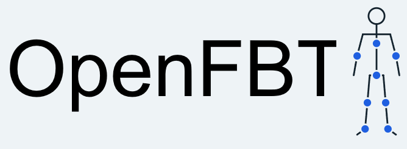

GPSoftware tracking technology
OpenFBT

An open-source approach to full-body tracking, beginning with a single camera.
About OpenFBT
A simpler starting point for full-body tracking
OpenFBT is a GPSoftware project exploring accessible full-body tracking through camera-based motion capture. Development is beginning with a single-camera setup, providing a focused foundation for the project to grow.
The project is currently in development. Support for additional tracking hardware is a longer-term goal; devices such as the Xbox 360 Kinect are possibilities for future work, not features available today.
Project direction
Built to grow beyond one camera
The initial focus on a single camera gives OpenFBT a clear place to begin. Over time, the project aims to explore support for other tracking devices, including the Xbox 360 Kinect. As development progresses, release notes and downloads will be published on the product page.
Contribute to the project
Help shape what comes next
OpenFBT is an open-source project, and contributions can help move it forward. Contact GPSoftware to discuss getting involved, or visit GitHub to explore the project.